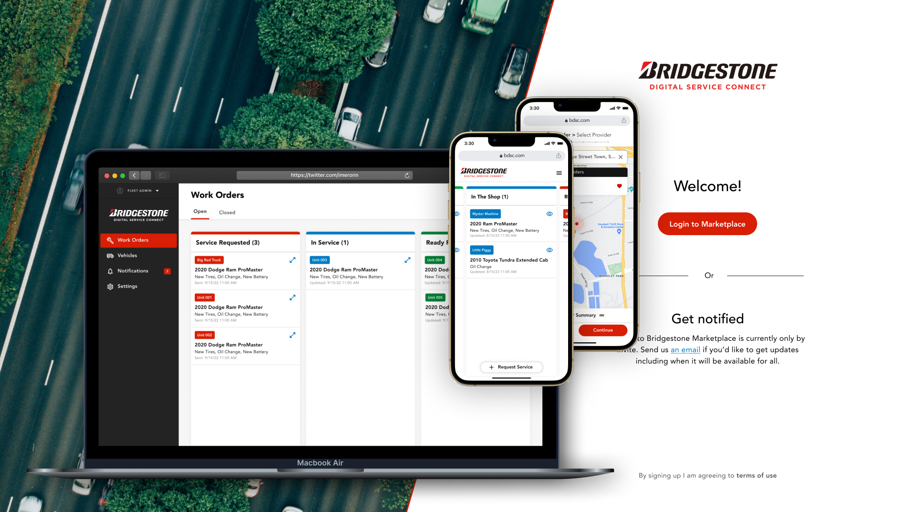
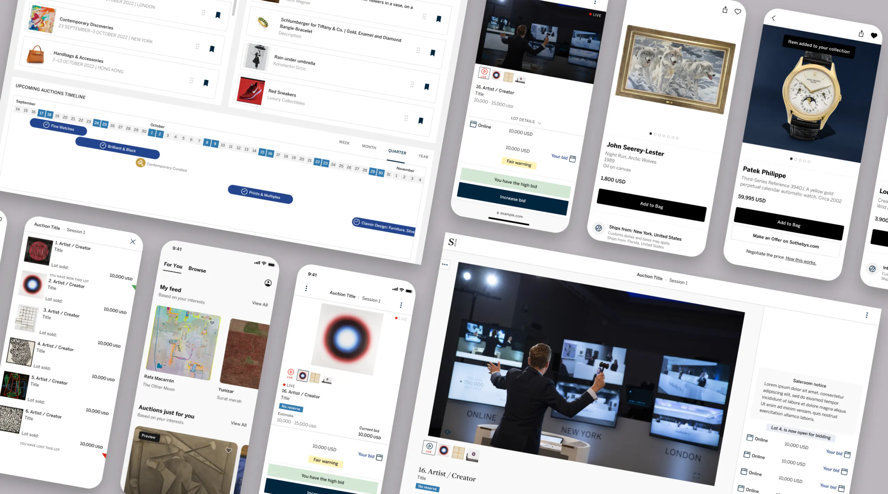
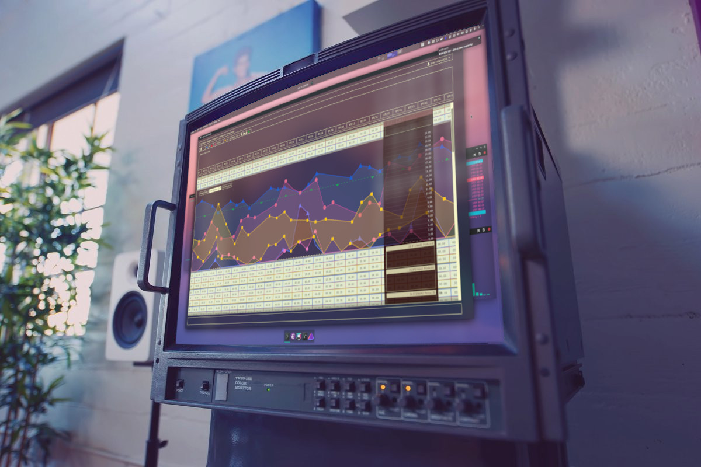
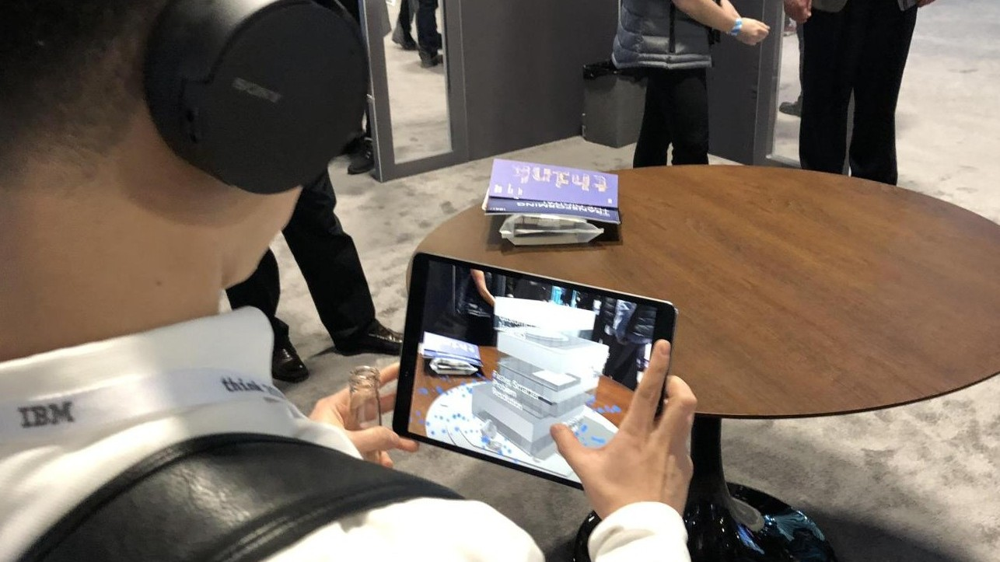
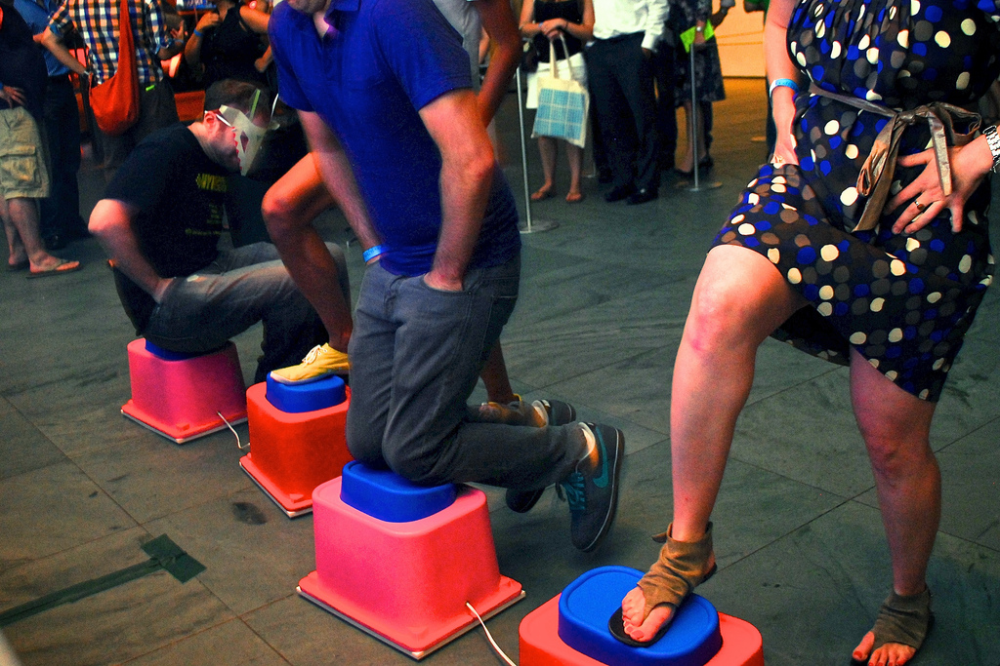

Ariel Churi
Sparkle Labs
Sparkle Labs provides engaging, hands-on learning experiences that spark curiosity, creativity, and a love of learning.
I design the pedagogy, source the parts, vet and hire the manufacturer, design the packaging, design the instructions, and sell the kits.
View
Bridgestone
I led UX/UI for Bridgestone's foray into a mobile repair service. Customers can choose maintenance for their vehicle, and a technician will come from a local franchise to provide the service.
This product required the creation of a customer-facing mobile and web app as well as a business-facing order management web app.
View
Sotheby's
As part of their digital transformation, I led UX designers and collaborated with multiple product owners on a variety of initiatives. My team brought together client-facing, online auctions with point-of-sale and administrative interfaces in a unified design system.
Research included observation, design-thinking workshops, and interviews. Major feature improvements were implemented to the client facing web and mobile as well as the backend interface and workflow while working in a heavily regulated industry.
View
Calvin Klein
This interactive touch-screen experience included careful onboarding and human-factors research. The UI for this flagship, in-store display required delight, luxury, and utility.
View
Unilever AI Supply Chain
Supply-chain management moves from the sourcing of manufacturing ingredients to the store shelf. The ESCIS5 Supply Chain Intelligence System is a machine learning enhanced dashboard for supply chain management.
I was hired as a consultant to span the roles from product development to UI design for this innovative prototype.
View
IBM Holobot
This sales initiative delivered iPad Pros in handmade boxes to specific targets. Removing the device from the box launches an augmented reality experience. I worked with stakeholders and developers to create an rousing experience that served business goals.
Initial interviews led to an outline of objectives which were translated into potential experiences. I sketched out scenes with a copywriter during a working session with the client. Cardboard prototypes were used for storyboarding the future 3D models.
The final product was a highlight of IBM Think Conference.
View
MOMA/Killscreen
This was an exhibition display project for the Museum of Modern Art. Any design that has mechanical interface with the user will be a test in longevity. I designed and created these wireless buttons to be in an art/slash gaming exhibit an the museum.
View
More work
Pedagogy, illustration, instructional design, embedded systems, industrial design, offset lithography are a few of the skills I have brought to my projects.
This section provides a quick overview of other projects.
View